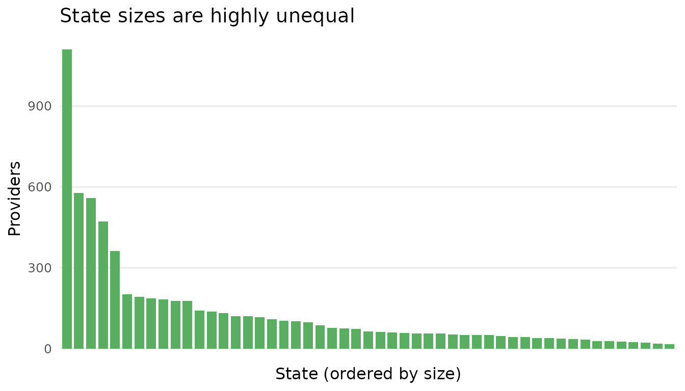
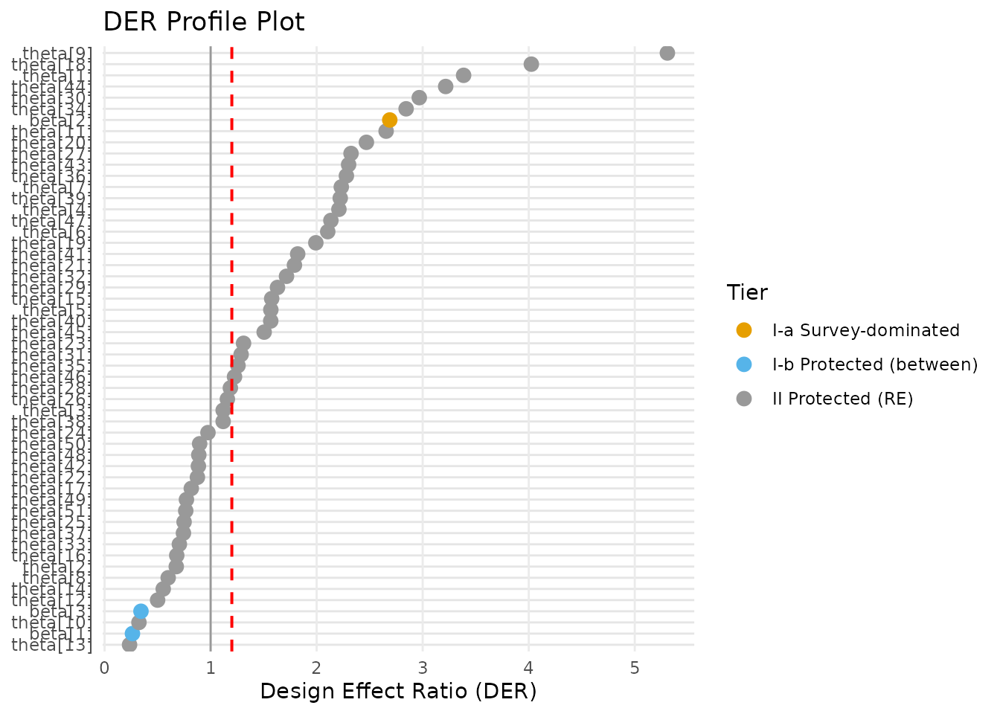
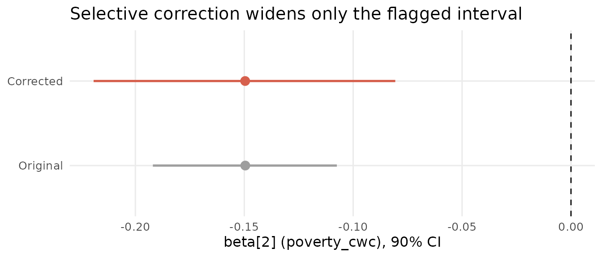

Case Study: NSECE-Style Survey Data
JoonHo Lee
2026-07-04
Source:vignettes/case-study-nsece.Rmd
case-study-nsece.RmdOverview
This vignette walks through a full Design Effect Ratio (DER) analysis from first look to publication-ready write-up, using the survey data bundled with svyder. It is written for practitioners: by the end you will be able to take a fitted Bayesian hierarchical model on complex survey data, decide which parameters the design actually distorts, correct exactly those, and report the result defensibly.
We work throughout on nsece_demo, a
synthetic dataset modelled on the 2019 National Survey
of Early Care and Education (NSECE).
Note.
nsece_demois not the real NSECE data. It is a synthetic, NSECE-like dataset bundled so every example runs with no Stan installation and no data-use agreement. Its structure mirrors the paper’s application (6,785 providers, 51 states), but its posterior draws, weights, and therefore its DER values differ from the published analysis. Every number this vignette computes is a live demo number; whenever we quote the paper’s real NSECE findings we say so explicitly and never present them as demo output. For the real analysis, see Lee, Williams, and Savitsky (2026).
We cover, in order:
- The design — providers, states, PSUs, unequal weights, and the global Kish design effect.
- Exploration — weight distribution, PSU structure, and group sizes.
-
The diagnostic — one call to
der_diagnose()and how to read it. - Fixed effects — why the within-state coefficient is flagged and the two between-state coefficients are not.
- Random effects — why “protection” of the state effects depends on the declared target.
-
Decomposition — reading
der_decompose()to see why each DER lands where it does. - Selective correction — widening only the flagged interval.
- Comparing targets — a robustness report across two estimands.
- Reporting — a template paragraph you can adapt.
Where the theory is only sketched here, we link out to the method
track: vignette("theory-decomposition") and
vignette("theory-classification-correction").
Background: the design
The model is a hierarchical logistic regression. Each provider i in state j[i] contributes a binary outcome, and each state carries a random intercept:
y_i \mid \beta, \theta_{j[i]} \sim \mathrm{Bernoulli}\!\left(\mathrm{logit}^{-1}\!\left(x_i^\top \beta + \theta_{j[i]}\right)\right), \qquad \theta_j \sim N\!\left(0, \sigma_\theta^2\right).
The design matrix X has three
columns: an intercept, poverty_cwc (a
cluster-mean-centred poverty measure that varies within
states), and tiered_reim (a state policy indicator that
varies only between states). The distinction between within-
and between-state covariates is the hinge of the whole analysis, so
nsece_demo records it explicitly:
data(nsece_demo)
data.frame(
covariate = colnames(nsece_demo$X),
param_type = nsece_demo$param_types,
varies = c("(constant)", "within states", "between states")
)
#> covariate param_type varies
#> 1 intercept fe_between (constant)
#> 2 poverty_cwc fe_within within states
#> 3 tiered_reim fe_between between states
N <- nsece_demo$N # providers
J <- nsece_demo$J # states
n_psu <- length(unique(nsece_demo$psu))
sprintf("N = %d providers | J = %d states | %d PSUs | sigma_theta = %.2f",
N, J, n_psu, nsece_demo$sigma_theta)
#> [1] "N = 6785 providers | J = 51 states | 644 PSUs | sigma_theta = 0.66"The survey weights are unequal, and unequal weights are the reason a design-based variance can diverge from the model-based one. The single most useful one-number summary of that inequality is the Kish global design effect,
\mathrm{DEFF} = \frac{N \sum_i w_i^2}{\left(\sum_i w_i\right)^2},
which we can read straight off the weights:
w <- nsece_demo$weights
deff_kish <- length(w) * sum(w^2) / sum(w)^2
round(deff_kish, 3)
#> [1] 2.728A Kish DEFF of 2.728 means the weighted sample carries only about 37% of the information an equally sized simple random sample would provide — a roughly 2.7-fold variance inflation before any model is fitted. That inflation is the raw material the DER redistributes across parameters.
Key insight. The global DEFF is a ceiling, not a verdict. Theorem 1 (see
vignette("theory-decomposition")) shows a within-state fixed effect absorbs the full DEFF while a between-state effect absorbs only \mathrm{DEFF}\,(1-B). So a single design can leave one coefficient badly under-covered and another perfectly calibrated — exactly what we will find.
How this compares with the real NSECE. For
orientation only: the published analysis (Lee, Williams, & Savitsky,
2026) uses the actual NSECE 2019 file — 6,785 providers and 51
states, as here, but drawn from 415 PSUs nested in 30
strata with a global DEFF of 3.76. The
synthetic nsece_demo collapses that two-stage design to 644
single-stage PSUs and a milder DEFF of 2.73, and has no strata slot.
Treat the numbers below as an illustration of the workflow, not
a replication of the paper.
Explore the design
Before running any diagnostic, look at the ingredients that drive the DER: the spread of the weights, the size of the PSUs, and the size of the states.
Weight distribution
if (requireNamespace("ggplot2", quietly = TRUE)) {
library(ggplot2)
ggplot(data.frame(w = w), aes(x = w)) +
geom_histogram(bins = 40, fill = svyder_pal[["I-b"]],
colour = "white", linewidth = 0.2) +
geom_vline(xintercept = 1, linetype = "dashed",
colour = svyder_pal[["target"]]) +
labs(x = "Survey weight (mean-1 scale)", y = "Providers",
title = "Unequal weights drive the design effect",
subtitle = sprintf("Kish DEFF = %.2f; dashed line marks weight = 1",
deff_kish)) +
theme_minimal(base_size = 12) +
theme(panel.grid.minor = element_blank())
}
Distribution of survey weights (rescaled to mean 1). The long right tail is what inflates the design-based variance; a perfectly equal-weight design would be a single bar at 1.
round(summary(w), 3)
#> Min. 1st Qu. Median Mean 3rd Qu. Max.
#> 0.005 0.276 0.572 1.000 1.200 22.395The weights range from near zero to well above 20. It is that
inequality — not the mean — that DEFF measures.
Note. Because
nsece_demo’s weights are already within-group normalised with mean 1, the threenormalizeconventions ("unit_mean","group_size","none") give identical DERs on this dataset. So this vignette does not use the demo to illustrate weight-convention sensitivity. In the real NSECE, the convention genuinely matters — it can even reverse which target flags more parameters (Lee et al., 2026); see Choosing the Variance Target.
PSU structure
The primary sampling units (PSUs) are the aggregation unit for the design-based variance: the sandwich “meat” sums squared cluster score totals, so PSU size governs how much the clustering costs.
psu_sizes <- as.numeric(table(nsece_demo$psu))
cat(sprintf("%d PSUs | providers per PSU: min %d, median %d, max %d\n",
length(psu_sizes), min(psu_sizes),
as.integer(median(psu_sizes)), max(psu_sizes)))
#> 644 PSUs | providers per PSU: min 1, median 11, max 16
table(psu_sizes)
#> psu_sizes
#> 1 2 3 4 5 6 7 8 9 10 11 12 13 14 16
#> 6 10 2 2 1 2 5 187 20 75 73 99 38 101 23Most PSUs hold about a dozen providers. This tidy, roughly balanced clustering is deliberate: it keeps the demo’s per-cluster score totals well behaved so the numbers are stable and reproducible.
Group (state) sizes
The 51 states are the model’s grouping factor and define the random effects. Their sizes are far more skewed than the PSUs:
group_sizes <- as.numeric(table(nsece_demo$group))
if (requireNamespace("ggplot2", quietly = TRUE)) {
gdf <- data.frame(state = seq_along(group_sizes),
n = sort(group_sizes, decreasing = TRUE))
ggplot(gdf, aes(x = reorder(factor(state), -n), y = n)) +
geom_col(fill = svyder_pal[["II"]], width = 0.8) +
labs(x = "State (ordered by size)", y = "Providers",
title = "State sizes are highly unequal") +
theme_minimal(base_size = 12) +
theme(axis.text.x = element_blank(),
axis.ticks.x = element_blank(),
panel.grid.minor = element_blank(),
panel.grid.major.x = element_blank())
}
Providers per state. A handful of large states sit alongside many small ones; small states have noisy per-state DERs because each contributes only one cluster-score contrast.
cat(sprintf("Providers per state: min %d, median %d, max %d\n",
min(group_sizes), as.integer(median(group_sizes)),
max(group_sizes)))
#> Providers per state: min 17, median 64, max 1110The imbalance matters twice over: large states have high shrinkage factors B (their random effects lean on their own data), and small states yield noisy per-state DERs — worth remembering when we reach the random effects.
Run the diagnostic
The full pipeline — compute the sandwich and posterior variances,
classify each parameter into a tier, and correct the flagged ones — runs
in a single call to der_diagnose(). The one argument that
defines the estimand is cluster: it names the
aggregation unit of the design-based variance.
Key insight.
clusteris required and has no default. Pass the design PSU ids for a design-based target (as here), orgroupfor a model-aligned target. Never use the deprecatedpsu =argument. We compare the two targets in the robustness section below.
result <- der_diagnose(
x = nsece_demo$draws,
y = nsece_demo$y,
X = nsece_demo$X,
group = nsece_demo$group,
weights = nsece_demo$weights,
cluster = nsece_demo$psu, # design-based target (PSU ids)
family = nsece_demo$family,
sigma_theta = nsece_demo$sigma_theta,
param_types = nsece_demo$param_types,
tau = 1.2
)The print method is the diagnostic at a glance:
result
#> svyder diagnostic (54 parameters)
#> Family: binomial | N = 6785 | J = 51
#> Target: 644 cluster(s) | meat: centered, DF-corrected | weights: unit_mean
#> DER range: [0.235, 5.308]
#> Tier III (DER undefined): sigma_theta
#> Threshold (tau): 1.20
#> Flagged: 30 / 54 (55.6%)
#>
#> Flagged parameters:
#> beta[2] DER = 2.689 [I-a] -> CORRECT
#> theta[1] DER = 3.386 [II] -> CORRECT
#> theta[4] DER = 2.210 [II] -> CORRECT
#> theta[5] DER = 1.568 [II] -> CORRECT
#> theta[6] DER = 2.104 [II] -> CORRECT
#> theta[7] DER = 2.232 [II] -> CORRECT
#> theta[9] DER = 5.308 [II] -> CORRECT
#> theta[11] DER = 2.655 [II] -> CORRECT
#> theta[15] DER = 1.576 [II] -> CORRECT
#> theta[18] DER = 4.025 [II] -> CORRECT
#> ... and 20 more
#>
#> Correction applied: 30 parameter(s) rescaled
#> Compute time: 0.064 secRead it top to bottom: the target is 644 clusters with a centred,
DF-corrected meat and mean-1 weights; the DER range spans the flagged
and shrinkage-protected extremes; sigma_theta sits in
Tier III (its DER is undefined by construction, so it
is reported but never certified); and 30 of 54 parameters clear the
threshold \tau = 1.2.
For a one-row model summary, use glance():
glance(result)
#> n_params n_flagged pct_flagged tau family n_obs n_groups mean_deff
#> 1 54 30 55.55556 1.2 binomial 6785 51 2.59527
#> mean_B der_min der_max
#> 1 0.8543053 0.2354213 5.307734The mean_deff (2.595) is the average per-state
design effect, close to the global Kish 2.728; mean_B
(0.854) is the average shrinkage factor. Together these two numbers
explain the entire DER profile, as the decomposition will make
explicit.
Fixed effects
Look first at the three fixed effects. The tidy() method
returns one row per parameter; we take the first three:
td <- tidy(result)
fe <- td[1:3, c("term", "der", "tier", "action")]
fe$covariate <- colnames(nsece_demo$X)
fe[, c("term", "covariate", "der", "tier", "action")]
#> term covariate der tier action
#> beta[1] beta[1] intercept 0.2626885 I-b retain
#> beta[2] beta[2] poverty_cwc 2.6894416 I-a CORRECT
#> beta[3] beta[3] tiered_reim 0.3430527 I-b retainThe pattern is stark and it is not an accident:
-
beta[2]—poverty_cwc, the within-state covariate — has DER 2.689, classified Tier I-a, and is flagged for correction. Its model-based posterior variance is only about 37% of what the design-based sandwich says it should be. -
beta[1]— the intercept, a between-state quantity — has DER 0.263, Tier I-b, and is retained. -
beta[3]—tiered_reim, the between-state policy covariate — has DER 0.343, Tier I-b, and is retained.
This is Theorem 1 made visible. A within-group covariate draws all its identifying variation from contrasts inside clusters, so it is fully exposed to the clustering and \mathrm{DER} \approx \mathrm{DEFF}. A between-group covariate is identified by comparisons across clusters, which the hierarchical model already shields through shrinkage, so \mathrm{DER} \approx \mathrm{DEFF}(1-B) — comfortably below 1 here.
Key insight. In the same model, the survey design badly under-covers the within-state coefficient while leaving the two between-state coefficients already conservative. A blanket correction that rescaled all three toward the sandwich target would narrow the two between-state intervals — the opposite of what a design correction is for. The full theory is in
vignette("theory-decomposition").
Random effects
Now the 51 state random effects. Under this design-based target, a large fraction are flagged:
re <- td[grepl("^theta", td$term), ]
cat(sprintf("Random effects flagged (design-PSU target): %d of %d\n",
sum(re$flagged), nrow(re)))
#> Random effects flagged (design-PSU target): 29 of 51
cat(sprintf("Median random-effect DER: %.3f\n", median(re$der)))
#> Median random-effect DER: 1.31129 of 51 state effects clear the threshold, with a median DER of 1.311. A profile plot shows the whole model at once — fixed effects and every state effect, coloured by tier, with the threshold as a dashed line:
plot(result, type = "profile")
DER profile. Each point is one parameter, coloured by tier; the dashed line is tau = 1.2. beta[2] (Tier I-a) sits well above the threshold, the two between-state fixed effects (Tier I-b) sit far below, and the state random effects (Tier II) straddle it under this design-based target.
Whether these state effects are “protected” is not a fixed property
of the model — it depends on what you declared the target to be. Re-run
the diagnostic with the model-aligned target
(cluster = group) and the picture shifts:
result_grp <- der_diagnose(
x = nsece_demo$draws,
y = nsece_demo$y,
X = nsece_demo$X,
group = nsece_demo$group,
weights = nsece_demo$weights,
cluster = nsece_demo$group, # model-aligned target
family = nsece_demo$family,
sigma_theta = nsece_demo$sigma_theta,
param_types = nsece_demo$param_types,
tau = 1.2
)
td_grp <- tidy(result_grp)
re_grp <- td_grp[grepl("^theta", td_grp$term), ]
cat(sprintf("Random effects flagged (model-group target): %d of %d\n",
sum(re_grp$flagged), nrow(re_grp)))
#> Random effects flagged (model-group target): 24 of 51
cat(sprintf("Median random-effect DER: %.3f\n", median(re_grp$der)))
#> Median random-effect DER: 0.956Under the model-group target only 24 of 51 state effects are flagged, and the median RE DER drops to 0.956 — around the value where the design and the model agree.
Key insight. This is the paper’s central message. Random effects are conditionally shrinkage-protected only when the aggregation unit matches the model’s grouping. Align the target to the design PSUs and the same effects can become design-sensitive. There is no target-free answer to “are the random effects protected?” — the estimand has to be declared first.
Note. Per-state DERs are noisy. Each state contributes exactly one cluster-score-total contrast to its own random-effect variance, so individual \theta_j DERs — especially for small states — carry real Monte Carlo and finite-sample error. Read the random effects as a distribution (how many flagged, the median), not as 51 precise per-state verdicts.
Decomposition
The der_decompose() function opens up why each
DER lands where it does. It reports, per parameter, the design effect
used, the shrinkage factor B, the
between-group variation share R_k, the
finite-group correction \kappa, and the
DER the closed-form theorems predict:
dec <- der_decompose(result)
dec_fe <- dec[dec$param_type %in% c("fe_within", "fe_between"), ]
round(dec_fe[, c("der", "deff_used", "R_k", "der_predicted")], 3)
#> der deff_used R_k der_predicted
#> 1 0.263 2.728 0.933 0.183
#> 2 2.689 2.728 0.014 2.689
#> 3 0.343 2.728 0.923 0.211Read across the R_k column — the between-group share of
each covariate’s identifying variation:
-
beta[2](poverty, within): R_k = 0.014 — essentially all its information is within states, so \mathrm{DER} \approx \mathrm{DEFF}. -
beta[1]andbeta[3](between): R_k \approx 0.92 — almost all between states, so the shrinkage shields them and the predicted DER falls well below 1.
That single column cleanly separates the two covariate types: R_k \approx 0.01 for the within-state coefficient versus R_k \approx 0.93 for the between-state ones. The predicted DERs sit right on top of the empirical ones, which is the decomposition doing its job.
The random-effect rows populate B and \kappa instead of R_k (Theorem 2 governs them):
theta1 <- dec[dec$param == "theta[1]", ]
round(theta1[, c("der", "deff_used", "B_used", "kappa", "der_predicted")], 3)
#> der deff_used B_used kappa der_predicted
#> 4 3.386 3.48 0.644 0.947 2.122For theta[1], the marginal random-effect DER is B \cdot \mathrm{DEFF} \cdot \kappa(J) — the
shrinkage factor and the finite-group correction together pull the raw
design effect down toward the predicted value. The mechanics are derived
in vignette("theory-decomposition").
Selective correction and intervals
der_diagnose() already applied the default
block-Cholesky correction to the flagged set (Algorithm 1 in the paper).
Its effect on any single parameter is a widening of the credible
interval by \sqrt{\mathrm{DER}} — and,
crucially, the unflagged parameters are left bitwise
untouched.
Compare the original and corrected 90% intervals for the flagged
fixed effect beta[2] against an unflagged one,
beta[1]:
draws_corr <- as.matrix(result) # corrected draws (flagged block only)
draws_orig <- result$original_draws
ci <- function(x) quantile(x, c(0.05, 0.95))
tab <- rbind(
`beta[1] original` = ci(draws_orig[, 1]),
`beta[1] corrected` = ci(draws_corr[, 1]),
`beta[2] original` = ci(draws_orig[, 2]),
`beta[2] corrected` = ci(draws_corr[, 2])
)
round(tab, 3)
#> 5% 95%
#> beta[1] original 0.007 0.488
#> beta[1] corrected 0.007 0.488
#> beta[2] original -0.192 -0.108
#> beta[2] corrected -0.219 -0.081
w2_orig <- diff(ci(draws_orig[, 2]))
w2_corr <- diff(ci(draws_corr[, 2]))
cat(sprintf("beta[2] 90%% CI width: %.3f -> %.3f (ratio %.2f)\n",
w2_orig, w2_corr, w2_corr / w2_orig))
#> beta[2] 90% CI width: 0.084 -> 0.139 (ratio 1.64)
cat(sprintf("beta[1] draws identical after correction: %s\n",
identical(draws_orig[, 1], draws_corr[, 1])))
#> beta[1] draws identical after correction: TRUEThe flagged beta[2] interval widens by a factor of about
1.64 — exactly its scale factor \sqrt{2.689} — while the unflagged
beta[1] draws come back identical to the input.
if (requireNamespace("ggplot2", quietly = TRUE)) {
cidf <- data.frame(
version = factor(c("Original", "Corrected"),
levels = c("Original", "Corrected")),
lo = c(ci(draws_orig[, 2])[1], ci(draws_corr[, 2])[1]),
md = c(median(draws_orig[, 2]), median(draws_corr[, 2])),
hi = c(ci(draws_orig[, 2])[2], ci(draws_corr[, 2])[2])
)
ggplot(cidf, aes(x = md, y = version, colour = version)) +
geom_pointrange(aes(xmin = lo, xmax = hi), linewidth = 0.9, size = 0.6) +
geom_vline(xintercept = 0, linetype = "dashed",
colour = svyder_pal[["target"]]) +
scale_colour_manual(values = c(Original = svyder_pal[["III"]],
Corrected = svyder_pal[["I-a"]]),
guide = "none") +
labs(x = "beta[2] (poverty_cwc), 90% CI", y = NULL,
title = "Selective correction widens only the flagged interval") +
theme_minimal(base_size = 12) +
theme(panel.grid.minor = element_blank())
}
Original vs corrected 90% credible interval for the flagged coefficient beta[2]. Correction shifts nothing and widens the interval to match the design-based variance; unflagged parameters (not shown) are unchanged.
These corrected draws are drop-in: use them for posterior summaries, credible intervals, or any downstream derived quantity, knowing the design correction has been applied to precisely the parameters that needed it and to no others.
Compare targets
Because the target is part of the estimand, good practice is to
report the DER under both plausible aggregation units and let
the reader see the sensitivity. der_compare() does this in
one call:
cmp <- der_compare(
result,
clusters = list(
design_psu = nsece_demo$psu,
model_group = nsece_demo$group
)
)
# reshape the fixed effects to a side-by-side view
fe_cmp <- cmp[cmp$param %in% c("beta[1]", "beta[2]", "beta[3]"), ]
fe_wide <- reshape(fe_cmp, idvar = "param", timevar = "cluster_name",
direction = "wide")
names(fe_wide) <- sub("der\\.", "", names(fe_wide))
fe_wide$covariate <- colnames(nsece_demo$X)
round_cols <- c("design_psu", "model_group")
fe_wide[round_cols] <- lapply(fe_wide[round_cols], round, 3)
fe_wide[, c("param", "covariate", "design_psu", "model_group")]
#> param covariate design_psu model_group
#> 1 beta[1] intercept 0.263 0.424
#> 2 beta[2] poverty_cwc 2.689 1.893
#> 3 beta[3] tiered_reim 0.343 0.447The flagged within-state coefficient beta[2] has DER
2.689 under the design-PSU target versus
1.893 under the model-group target — both above the
threshold, so the headline finding is robust to the target
choice even though the magnitude moves. The between-state
coefficients stay well below 1 under either target.
Note. In the real NSECE the target choice is even more consequential: the paper reports 1 of 54 parameters flagged under the model-group target versus 28 of 54 under the design-PSU target (Lee et al., 2026). The synthetic demo compresses that gap (30 vs 25), but the lesson is the same: declare the target, and report the comparison. The dedicated treatment is in Choosing the Variance Target.
Reporting for publication
A DER analysis is only as credible as its write-up. Because the DER depends on choices a reader cannot see in a coefficient table — the declared target, the weight convention, the threshold — those choices belong in the methods text. Here is a template paragraph you can adapt, filled with this vignette’s live demo numbers:
We assessed the design sensitivity of each model parameter with the Design Effect Ratio (DER), the ratio of a declared design-based (sandwich) variance to the model-based posterior variance (Lee, Williams, & Savitsky, 2026). We declared a design-based target aggregating scores to the 644 survey PSUs, with survey weights rescaled to mean one and a stratum-centred, degrees-of-freedom-corrected meat. Parameters with DER exceeding 1.2 were flagged as survey-sensitive. Of the 54 parameters, 30 were flagged — most prominently the within-state poverty coefficient (DER = 2.689), which is identified by within-cluster contrasts and therefore fully exposed to the clustering. We applied a selective block-Cholesky correction to the flagged set only, widening the poverty coefficient’s 90% credible interval by a factor of 1.64 while leaving the well-calibrated between-state coefficients and the shrinkage-protected majority of state random effects unchanged. As a robustness check we recomputed all DERs under a model-aligned target (aggregating to states); the poverty coefficient remained flagged under both targets.
Adapt it by stating: (1) the declared target and why
(design PSUs vs model groups); (2) the weight
convention (normalize); (3) the
threshold and any sensitivity check
(der_sensitivity()); (4) the flagged set
and the selective nature of the correction; and (5)
that unflagged parameters were left untouched. If your design has strata
or a known empty-PSU universe, report strata and
cluster_strata too (see
vignette("theory-sandwich")).
What’s next?
You now have the full applied loop: explore, diagnose, interpret, decompose, correct, compare, and report.
| Where to go | What you will find |
|---|---|
| Choosing the Variance Target | The target decision in depth: cluster,
normalize, strata,
cluster_strata
|
| Backends | Feeding real brms / cmdstanr
/ rstanarm fits and survey designs into
svyder |
vignette("theory-decomposition") |
The math behind the fixed- and random-effect DERs: Theorems 1 and 2, R_k, B, \kappa(J), and the conservation law |
vignette("theory-classification-correction") |
The four tiers, the threshold rationale, and why blanket correction is harmful |
For the real NSECE 2019 analysis this synthetic case study is patterned on, see Lee, Williams, and Savitsky (2026).